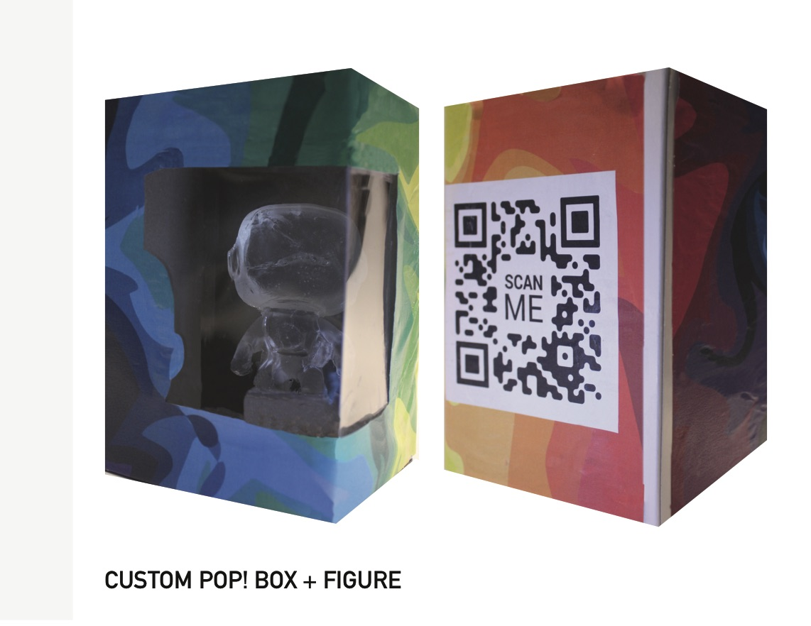

Napoleon's Retreat from Moscow


An installation emulating the endless loop I experienced travelling my whole life between divorced parents homes. This journey is illustrated on a plain tote, similar to the one I would pack for my trips. The destruction of the bags and the
maps illustrated on them represent the fatigue I experience after 18 years of travelling. Accompanying each tote is a shirt, each have three different colored phrases screenprinted on them. Each shirt is the same cotton t shirt, to mimic the
monotony of packing your life in a bag. Each print is a statement about my age, my understanding of the world, and my stance on home.
cotton shirts, cotton totes, speedball ink
Thanks to the Black Iris gallery for allowing this work to be later displayed on February 6th, 2021!
Six Word Memior
Describing myself with six words, via lyrics from the My Chemical Romance song, "Dead!"
A Personality Costs $X.99

A publication on my Pop! Figures and analyzing their relationship to my developmental environment, family dynamic and personal identification.
X.99
A publication on personal identity and material objects, stemming from previously mentioned project
A Price on Personality
research presentation helping transition between previous two objects
Open Up

A piece meant to portray personal struggles with mental illness and opening up to heal.
Triggered
A publication about emotional triggers, educating the public on what "triggered" actually means and how those who experience cope.